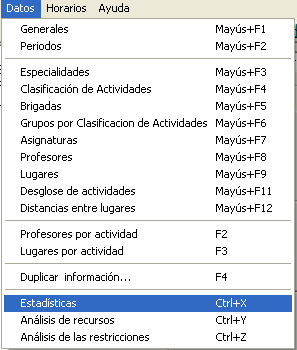
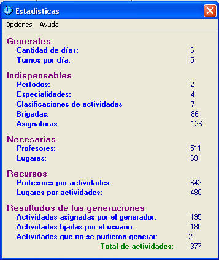

|
Estadísticas |
Las estadísticas muestran las cantidades de los diferentes listados que se poseen en toda la información. Esta herramienta es muy útil para conocer, de forma global si faltan datos por entrar, necesarios para generar los horarios. También puede conocer acerca de las asignaciones de actividades.
 
Técnica rápida para analizar los recursos:
La cantidad de profesores por actividades y la cantidad de lugares por actividad debe superar la cantidad de asignaturas si se conoce que todas las asignaturas poseen actividades en su desglose.